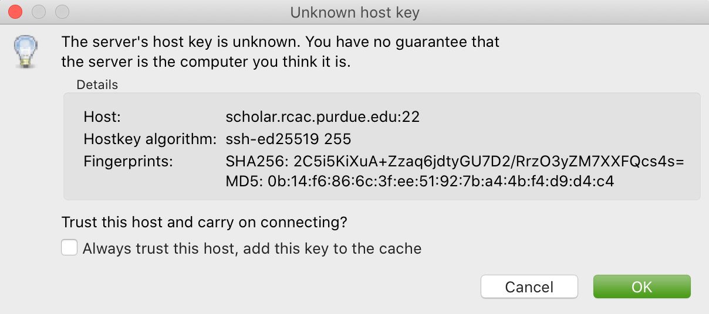

FAQs
Cannot open the connection. No such file or directory.
Copy/paste from terminal (not a console) inside RStudio to RMarkdown.
Displaying multiple images after a single Jupyter Notebook Python code cell.
Error: object_name is not found.
Find the latitude and longitude of a location.
How and why would I need to "escape a character"?
How can I fix the error "Illegal byte sequence" when using a UNIX utility like cut?
How can I use SQL in RMarkdown?
How can you run a line of R code in RStudio without clicking the "Run" button?
How do I connect to Scholar from off-campus?
How do I delete a file from my RStudio directory?
How do I rename a file from my RStudio directory?
How do I render an image in a shiny app?
How do you create an RMarkdown file?
How to transfer files between your computer and Scholar.
I'm unable to connect to RStudio Server.
I'm unable to type into the terminal in RStudio.
In Scholar, on RStudio, my font size looks weird or my cursor is offset.
Installing my_package for Python.
Is there a guide for best practices using R?
Is there a style guide for R code?
Jupyter Notebook download error with IE.
Jupyter Notebook kernel dying.
Problems building an RMarkdown document on Scholar.
Problems saving work as a PDF in R on Scholar.
Python kernel not working, Jupyter Notebook won't save.
RMarkdown “Error: option error has NULL value” when knitting".
RStudio is taking a long time to open.
The package my_package is not found.
Tips for using Jupyter notebooks.
Unicode character error when Knitting an RMarkdown file to PDF.
What is a good resource to better understand HTML?
What is my username on Scholar?
Cannot open the connection. No such file or directory.
If you receive an error similar to:
Error in file(file, "rt") : cannot open the connection
In addition: Warning message:
In file(file, "rt") :
cannot open file '/class/datamine/data/goodreads_books.csv': No such file or directoryThis error means that the path to the dataset does not exist. In this case, the path should be /class/datamine/data/csv/goodreads_books.csv. When you receive an error like this, usually during a call to read.csv, you should double check that the path to your dataset is actually correct.
How do I connect to Scholar from off-campus?
There are a variety of ways to connect to Scholar from off-campus. If you just want to use Jupyter notebooks (e.g., for Python), you can use JupyterHub. If you just want to use RStudio, you can use RStudio Server.
In Scholar, on RStudio, my font size looks weird or my cursor is offset.
In scholar, navigate to Tools > Global Options > Appearance. You can change your font, including the size and the color scheme. The default font in RStudio Server Pro is Modern (font size 10), and the default Editor theme is Textmate. Make your desired changes, and then click the Apply button.
I'm unable to type into the terminal in RStudio.
Try opening a new terminal, try clearing the terminal buffer, or interrupting the current terminal. All these options come from a menu that will pop up when you hit the small down arrow next to the words "Terminal 1" (it might be another number depending on how many terminals are open) which is on the left side right above the terminal in RStudio.
I'm unable to connect to RStudio Server.
Try closing your browser, clearing your cookies, and using the original link: https://rstudio.scholar.rcac.purdue.edu/ for RStudio Server Pro.
RStudio is taking a long time to open.
In general, you do NOT want to save your .RData file when you close RStudio. These files will make RStudio take a long time to open, next time you use RStudio.
It is possible that you (previously) saved a large .RData file the last time that you closed RStudio. If you did save your .RData file, and your RStudio is very slow to open, then you might want to remove the .RData file now. You can do the following:
- Inside RStudio, select the
Terminal(located near theConsole; do not use theConsoleitself). - Inside the
Terminal, type:cd(and hit Enter/Return) so that you will be working in your home directory. You can double-check this by typing:pwdand it should show you that you are working in/home/mdw(but of coursemdwwill be whatever your username is). - Type:
rm .RData(be sure to put a space betweenrmand.RData) and then hit Enter/Return.
Now your R workspace should be fresh when you log out of RStudio (by clicking the little orange "log out" button, in the upper-right-hand corner of RStudio). In other words, next time, you will not have old variables hanging around, from a previous session. Now your RStudio should load more quickly at the start.
How do I delete a file from my RStudio directory? (asked by Karthik Uppuluri)
In the lower-right-hand corner of your RStudio, you have a panel with 5 tabs:
Files, Plots, Packages, Help, Viewer
Choose the Files tab. That will give you a listing of files in your home directory. You can click on any of them (i.e., put a checkbox beside the name of the file) and hit the Delete button.
Screenshot provided by Hilda Somnooma Marie Bernadette Ibriga:

How do I rename a file from my RStudio directory?
In the lower-right-hand corner of your RStudio, you have a panel with 5 tabs:
Files, Plots, Packages, Help, Viewer
Choose the Files tab. That will give you a listing of files in your home directory. You can click on any of them (i.e., put a checkbox beside the name of the file) and hit the Rename button.

How can you run a line of R code in RStudio without clicking the "Run" button?
- Click anywhere on the line (you do not need to highlight the line, and you do not need to click at the start or end of the line; anywhere on the line is ok).
- Type the "Control" and the "Return (or Enter)" keys together, at the same time, to run that line.
This will save you a great deal of time, in the long run.
My R session freezes.
Log out of RStudio Server Pro, using either the "Sign Out" under the File Menu, or using the little orange "log out" button, in the upper-right-hand corner of RStudio. If neither option works, you can try closing your browser window manually.
Scholar is slow.
Possibility one:
Some of the files we use in this class require a few minutes to load, if we use the read.csv() function in R.
Here is a method that can save you some time in data import:
- Read only the first, say, 10000 rows of data (see instructions below), and complete your code using the smaller dataset. The code works for the subset of data should also work for the complete data. This output is not your final answer!
- Once you complete the code, read in the entire dataset, and run the code to RStudio. You may even close the ThinLinc after submitting the code as long as you do not close your RStudio window. Closing RStudio will stop your code from running. It is also highly recommended to save your code prior to running it.
- Some time (e.g., a few hours) later, you can come back and check your output. Scholar is a computing facility that is always on, and thus you can leave it do the work.
How do you read the first 10000 rows then? For example, we usually use the following line of code to read all of the election data:
myDF <- read.csv('/class/datamine/data/election/itcont2020.txt')Now, with an additional parameter nrows, you can decide how many rows to read:
myDF_short <- read.csv('/class/datamine/data/election/itcont2020.txt', nrows = 10000)Possibility two:
You could be close to using 100% of your quota on scholar.
- Use the Terminal (not the Console), and run the following command:
myquota. - If your quota is near 100% in your
/homedirectory (25 GB), you will need to delete some files.
How to transfer files between your computer and Scholar.
Solution 1: use a file transfer client
There are many specialized file transfer clients.
On Windows, we recommend WinSCP: https://winscp.net/eng/download.php (There are frequently advertisements on this page, but look for the green button that says something like DOWNLOAD WINSCP 5.17.7 (10.6 MB))
On a Mac, we recommand Fetch: https://fetchsoftworks.com/ (Education users can apply for a free license: https://fetchsoftworks.com/fetch/free)
The server hostname that you want to connect to is: scholar.rcac.purdue.edu
FileZilla is another good client, which works on all platforms.
Download and install the FileZilla Client onto your personal computer. FileZilla uses sftp ([S]SH [F]ile [T]ransfer [P]rotocol) to transfer files to and from Scholar.
To connect to Scholar from FileZilla, enter the following information and click "Quickconnect":
Host: scholar.rcac.purdue.edu
Username: <your_scholar_username> (For example, Dr. Ward's would be mdw. See here.)
Password: <your_scholar_password>
Port: 22
After clicking "Quickconnect" you may be asked something similar to the following:
 Select "OK" and establish the connection.
- The files on the left-hand side are your local computer's files. The files on the right-hand side are the files in Scholar. To download files from Scholar, right click the file(s) on the Scholar side (right-hand side) and click "Download". To upload files to Scholar, right click the file(s) on your local machine (left-hand side) and click "Upload".
 Solution 2: use SFTP
Solution 2: use SFTP
On windows:
- Open your start menu and click on
cmd. - Type:
sftp username@scholar.rcac.purdue.edu(replace "username" with your username). - Once connected, follow the documentation from RCAC to transfer files.
On mac:
- Open a terminal.
- Type:
sftp username@scholar.rcac.purdue.edu(replace "username" with your username). - Once connected, follow the documentation from RCAC to transfer files.
My password will not work.
Remember that you need to use your BoilerKey to log into most resources on Scholar this year: https://www.purdue.edu/boilerkey
You typically type your 4-digit PIN, then a comma, and then your randomly generated BoilerKey code.
There is still one Scholar tool that uses the Career password: Jupyter Notebooks, located at https://notebook.scholar.rcac.purdue.edu/
If your Career password has expired and you need to log onto Jupyter Notebooks, you can use these steps to reset your password:
- Go to Secure Purdue.
- Click on the option "Change your password".
- After logging in, search for the link "Change Password" that "Allows you to change your Purdue Career Account password".
Jupyter Notebook download error with IE.
Please note that Internet Explorer is not a recommended browser. If still want to use Explorer, make sure you download the notebook as "All Files" (or something similar). That is, we need to allow the browser to save in its natural format, and not to convert the notebook when it downloads the file.
Jupyter Notebook kernel dying.
Make sure you are using the R 3.6 (Scholar) kernel.
Make sure you are using https://notebook.scholar.rcac.purdue.edu and not https://notebook.brown.rcac.purdue.edu. (Use Scholar instead of Brown.)
Try clicking
Kernel > Shutdown, and then reconnect the kernel.If one particular Jupyter Notebook template gives you this error, then create a new R 3.6 (Scholar) file.
Try re-running the code from an earlier project that you had set up and working using Jupyter Notebooks.
One student needed to re-run the setup command one time in the terminal:
/class/datamine/apps/runme.sh
- You could be close to using 100% of your quota on scholar.
- Use the Terminal (not the Console), and run the following command:
myquota. - If your quota is near 100% in your
/homedirectory (25 GB), you will need to delete some files.
Python kernel not working, Jupyter Notebook won't save.
You probably have a package conflict.
- Navigate to Jupyter Notebook: https://notebook.scholar.rcac.purdue.edu/, and login.
- Click on the "Running" tab and shutdown all running kernels.
- Then navigate to RStudio: https://rstudio.scholar.rcac.purdue.edu/, and login.
- Open a terminal, and run the following commands:
pip uninstall mypackagenamehere
/class/datamine/apps/runme.sh- Go back to https://notebook.scholar.rcac.purdue.edu/, click on "Control Panel" in the upper right hand corner.
- Click the "Stop My Server" button, followed by the green "My Server" button.
Installing my_package for Python.
Do not install packages in Scholar using:
pip install my_package
or
pip install my_package --user
We've tried to provide you with a ready-made kernel with every package you would want or need. If you need a newer version of some package, or need a package not available in the kernel, please send us a message indicating what you need. Depending on the situation we may point you to create your own kernel.
Displaying multiple images after a single Jupyter Notebook Python code cell.
Sometimes it may be convenient to have several images displayed after a single Jupyter cell. For example, if you want to have side-by-side images or graphs for comparison. The following code allows you to place figures side-by-side or in a grid.
Note you will need the included import statement at the very top of the notebook.
import matplotlib.pyplot as plt
number_of_plots = 2
fig, axs = plt.subplots(number_of_plots)
fig.suptitle('Vertically stacked subplots', fontsize=12)
axs[0].plot(x, y)
axs[1].imshow(img)
plt.show()
number_of_plots = 3
fig, axs = plt.subplots(1,number_of_plots)
fig.suptitle('Horizontally stacked subplots', fontsize=12)
axs[0].plot(x, y)
axs[1].imshow(img)
axs[2].imshow(img2)
plt.show()
number_of_plots_vertical = 2
number_of_plots_horizontal = 2
# 2 x 2 = 4 total plots
fig, axs = plt.subplots(number_of_plots_vertical,number_of_plots_horizontal)
fig.suptitle('Grid of subplots', fontsize=12)
axs[0][0].plot(x, y) # top left
axs[0][1].imshow(img) # top right
axs[1][0].imshow(img2) # bottom left
axs[1][1].plot(a, b) # bottom right
plt.show()RMarkdown “Error: option error has NULL value” when knitting".
This error message occurs when running a code chunk in RMarkdown by clicking the green "play" button (Run Current Chunk). Do not click on the green triangle "play" button. Instead, knit the entire document, using the "knit" button that looks like a ball of yarn with a knitting needle on it.
How do you create an RMarkdown file?
Any text file with the .Rmd file extension can be opened and knitted into a PDF (or other format). If you'd like to create an RMarkdown file in RStudio, you can do so.
- Open an RStudio session.
- Click on
File > New File > RMarkdown.... - You may put R code into the R blocks (the grey sections of the document), and put any comments into the white sections in between.
This is an excellent guide to RMarkdown, and this is a cheatsheet to get you up and running quickly.
Problems building an RMarkdown document on Scholar.
If you are having problems building an RMarkdown document on Scholar, try the following:
- Remove your
Rdirectory:
- Open up a terminal (not a console) in RStudio.
- Run the following commands:
cd ~
rm -rf RThis will force the removal of your R directory. It will remove your old R libraries. They will reload the newest versions if you install them again, and as you use them.
This is recommended, especially at the start of the academic year.
If your R is taking a long time to open, see here.
How can I use SQL in RMarkdown?
When you use SQL in RMarkdown you can highlight the code in code chunks just like R by writing "sql" instead of "r" in the brackets:
SELECT * FROM table;You will notice that all the SQL code chunks provided in the template have the option eval=F. The option eval=F or eval=FALSE means that the SQL statements would be shown in your knitted document, but without being executed.
To actually run SQL inside RMarkdown see here.
You can read about the different languages that can be displayed in RMarkdown here: https://bookdown.org/yihui/rmarkdown/language-engines.html.
Copy/paste from terminal (not a console) inside RStudio to RMarkdown.
If you're using the terminal inside the Scholar RStudio at https://rstudio.scholar.rcac.purdue.edu, then right clicking won't work. A trick that does work (and often works in other situations as well) is the keyboard shortcut ctrl-insert for copy and shift-insert for paste. Alternatively, use the Edit/Copy from the menu in the terminal.
How do I render an image in a shiny app?
There are a variety of ways to render an image in an RShiny app. See here.
The package my_package is not found.
The package might not be installed. Try running:
install.packages("ggmap")Note that if you have already run this on ThinLinc, there is no need to do it again.
Another possibility is that the library is not loaded, try running:
library(ggmap)Problems installing ggmap.
Two possible fixes:
- Open a terminal (not the console) in RStudio and run:
rm -rf ~/RAfter that, re-open RStudio and re-install ggmap:
install.packages("ggmap")
# Don't forget to load the package as well
library(ggmap)- Open a terminal (not the console) and run:
module load gcc/5.2.0After that, restart all RStudio processes.
Error: object_name is not found.
In R if you try to reference an object that does not yet exist, you will receive this error. For example:
my_list <- c(1, 2, 3)
mylistIn this example you will receive the error Error: object 'mylist' not found. The reason is mylist doesn't exist, we only created my_list.
Zoom in on ggmap.
Run the following code in R:
?get_googlemapUnder the arguments section you will see the argument zoom and can read about what values it can accept. For the zoom level , a map with zoom=9 would not even show the entire state of California. Try different integers. Larger integers "zoom in" and smaller integers "zoom out".
Find the latitude and longitude of a location.
- Install the
ggmappackage. - Run the following lines of code to retrieve latitude and longitude of a location:
as.numeric(geocode("London"))Replace "London" with the name of your chosen location.
Problems saving work as a PDF in R on Scholar.
Make sure you are saving to your own working directory:
getwd()This should result in something like: /home/<username>/... where <username> is your username. Read this to find your username.
If you don't see your username anywhere the the resulting path, instead try:
- Specifying a different directory:
dev.print(pdf, "/home/<username>/project4map.pdf")Make sure you replace <username> with your username.
- Try setting your working directory before saving:
setwd("/home/<username>")Make sure you replace <username> with your username.
What is a good resource to better understand HTML?
https://www.geeksforgeeks.org/html-course-structure-of-an-html-document/
Is there a style guide for R code?
Is there a guide for best practices using R?
https://www.r-bloggers.com/r-code-best-practices/
- Comment what you are going to do.
- Code -- what did you do?
- Comment on the output -- what did you get?
Tips for using Jupyter notebooks.
See here.
What is my username on Scholar?
To find your username on Scholar:
- Open a terminal (not the console).
- Execute the following code:
echo $USERHow and why would I need to "escape a character"?
You would need to escape a character any time when you have a command or piece of code where you would like to represent a character literally, but that character has been reserved for some other use. For example, if I wanted to use grep to search for the $ character, literally, I would need to escape that character as its purpose has been reserved as an indicator or anchor for the end of the line.
grep -i "\$50.00" some_file.txtWithout the \ this code would not work as intended. In this case, if you chose to use single quotes instead, this would work, because single quotes are taken literally by the shell and aren't expanded like with double quotes:
grep -i '$50.00' some_file.txtAnother example would be searching for "a" or "b", notice we need to escape (, ), and |:
grep -i '\(a\|b\)' some_file.txtAlternatively, we could use the -E option which uses extended regular expressions and doesn't need to be escaped as much:
grep -Ei '(a|b)' some_file.txtAnother example would be if you wanted to write out 10*10*10 = 1000 in markdown. If you don't escape the asterisks, the result may be rendered as 101010 = 1000, which is clearly not what was intended. For this reason, we would type out:
10\*10\*10 = 1000Which would then have its intended effect.
How can I fix the error "Illegal byte sequence" when using a UNIX utility like cut?
Often times this is due to your input having illegal, non-utf-8 values. You can find all lines with illegal values by running:
grep -axv '.*' fileTo fix this issue, you can remove the illegal values by running:
iconv -c -t UTF-8 < old_file > new_fileUnicode character error when Knitting an RMarkdown file to PDF.
If you get the following error when trying to Knit an RMarkdown file to PDF:
! Package inputenc Error: Unicode character <somecharacter> (U+0195)
(inputenc) not set up for use with LaTeX.You are probably trying to print a unicode character. If you don't think you are trying to print a unicode character, it could be that part of some dataset which you are printing is. To fix this error, print a different slice of the dataset. Alternatively, try using xelatex to compile your PDF, by modifying your YAML header to look something like:
---
title: "Title"
output:
pdf_document:
latex_engine: xelatex
---Important note: Make sure you verify that the PDF contents are what you expect if testing xelatex.
My tab key will not auto-complete anymore in RStudio. How can I fix this?
In the Terminal (not the Console) in RStudio, type:
cd ~/.config
mv rstudio rstudio.old
mv RStudio RStudio.oldand then log out of RStudio using the little orange button, and log back in.